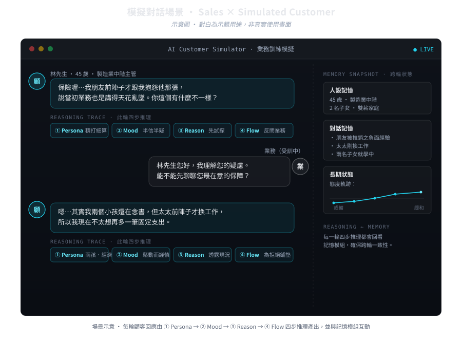
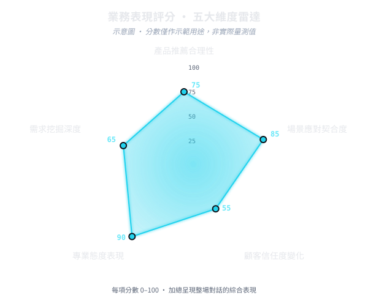

Sales training system業務訓練系統/Multi-step Reasoning/Persona × Memory × Scoring
2025.10 — In development · enterprise training2025.10 — 進行中 · 企業內訓場景
This is a sales training system. The
user plays the sales rep, an AI plays the customer,
and after the session ends the system scores the rep's performance
across multiple dimensions and returns actionable feedback. Simulation
is the method — the goal is to let new reps sharpen real-conversation
skills before facing a real client.
For the AI customer to be worth practising against, it has to feel
like a specific person — one with emotions, that hesitates, says the
wrong thing sometimes, and can also be persuaded. The design decision:
don't rely on a single LLM call to "play the customer" as a whole.
Decompose "how should the customer respond" into
multi-step reasoning — each step locks down one
dimension (who this person is, the current mood, why they're saying
it, where the conversation should go), the next step reasons under
the previous step's constraints, and only at the end does the
customer's reply get generated. This write-up covers
why decomposition is necessary, what the resulting
system looks like, and how rep performance is scored at the end.
這是一個業務訓練系統。使用者扮演業務、
AI 扮演顧客，對話結束後系統會對業務的表現做多面向評分，
並回饋具體可以改進的方向。
模擬只是手段 —— 真正的目的是讓業務新人在面對真實客戶之前，
先把對話能力練到位。
Applicable domains適用領域The current design transfers to any training scenario
where "the conversation process matters more than the outcome" —
high-value product sales, client-relationship maintenance, complaint
handling, advisory services. The finance and insurance industries have
already expressed strong interest.目前的設計可遷移到任何「對話過程比結果更重要」的訓練場景 ——
高價商品銷售、客戶關係維護、客訴處理、諮詢類服務。
金融與保險產業已表達高度興趣。
Primary use主要場景The system provides composable training material —
sales scenarios, different customer personality
types, dialogue scripts, and different
product domains can be combined on demand, acting as an internal
training library for enterprise employees. Training isn't tied to a single
case; it covers the variations actually encountered in practice.系統提供可組合的訓練素材 ——
業務情境、不同類型的客戶個性、
對話腳本、不同產品的推銷領域
都能依需求搭配，作為企業內部員工訓練的素材庫。
讓訓練不被綁在單一案例上，而是能涵蓋實務上會遇到的各種變化。
Status現況In development. The architecture is settled and
working; current effort focuses on iterating two dimensions —
customer realism and scoring stability.產品開發中。架構已確立並可運作，
當前的工作集中在顧客真實感與評分穩定度
這兩個維度的迭代上。
Illustration · dialogue is for demonstration, not an actual screen示意圖 · 對白為示範用途，非實際畫面

Simulated dialogue scene · each customer turn is produced by four-step reasoning, interacting with the memory module ·
dialogue and persons are illustrative, not an actual screen模擬對話場景 · 每一輪顧客回應由四步推理產出，並與記憶模組互動 ·
對白與人物為示意，非實際使用畫面
System overview系統概觀
The system revolves around three modules pulling on each other:
Reasoning Pipeline handles "how to respond this turn"
(multi-step reasoning); Memory Module handles "what
happened earlier" (cross-turn state); External Scoring
handles evaluating how the sales rep did this round. The three operate
around the same dialogue session — not as independent post-processing.
The problem: one LLM call can't simulate a real person問題：單次 LLM 無法模擬一個真人
The dominant approach to LLM role-playing is uniform: bundle the persona,
the conversation history, and a strict behavioral rubric all into the
same prompt, and let the LLM generate responses inside
that fixed frame. Customer-service demos and casual chatbots can run on
this approach, but in sales training it breaks
immediately — because the customers a sales rep has to handle are
never describable by a simple set of labels; they're an interrelated
bundle of features that shifts with context. Cramming that kind of person
into a single step hits two structural problems.
Composite personas collapse into checklists複合人設被壓成清單Customers in sales scenarios are "composite
personalities" — a 45-year-old with two kids, recently laid off, half-
sceptical about insurance, talks in circles but is actually careful about
money. Getting the LLM to play that person well means stuffing every one
of those features into a single persona description. In practice, once
the prompt grows to that weight, the model
locks onto the most salient few labels and keeps re-emphasizing
them; secondary traits get diluted, and the persona degrades into
a "feature list" rather than "a person" — the resulting
speech sounds like NPC lines, not the customer who'd actually be sitting
on a sofa across from you.業務場景裡的顧客是「複合個性」——
一個 45 歲、有兩個小孩、剛被資遣、對保險半信半疑、
講話喜歡繞圈但其實精打細算的客戶。要讓 LLM 演好這個人，
等於要把上面所有特徵都塞進同一段 persona 描述。
實務上 prompt 一旦寫到那個份量，
模型會自動抓最顯著的幾個標籤反覆強調，
次要特徵被稀釋掉，整段 persona 退化成一份「特徵清單」
而不是「一個人」—— 講出來的話像 NPC 的台詞，
不像會出現在客廳沙發上的那個顧客。
Imperative personas don't vary指令式 persona 沒變化性A persona prompt is, in form, a list of imperatives:
"your personality is…", "your catchphrase is…", "when you don't want to
be pitched you say…". The fundamental problem is
writing state as rules — but real
people are not rule-executors. The same "I don't want to be pitched" at
turn 1, at turn 7, and after the rep has touched a pain point should
sound completely different. Imperative personas lack that
context-evolving flexibility; every turn looks roughly the same. The rep
in front of this customer is training to "crack a fixed template", not
"deal with a person who changes" — and for training purposes, that's
barely different from not training at all.Persona prompt 在寫法上本質是一份指令：「你的性格是…」
「你的口頭禪是…」「你不想被推銷時會說…」。
這種寫法的根本問題是把狀態當規則寫 ——
但真實的人不是規則的執行者。同樣是「不想被推銷」，
他在第 1 輪、第 7 輪、被業務踩到痛點之後，
講出來的話應該完全不同。指令式 persona 缺乏這種隨情境演變的彈性，
每一輪的反應幾乎都長得一樣。業務在這種顧客面前練到的是
「破解一個固定模板」，不是「應對一個會變的人」——
訓練效果上，這跟沒練幾乎沒有差別。
The shared root cause of both: cramming "simulating a person" into a
single step forces the LLM to handle "who they are",
"their current state", and "how this specific line should be said" in one
reasoning action. These things are related, but
shouldn't be decided simultaneously — forcing them
together produces exactly the two failure modes above. That structural
gap is the reason reasoning needs to be decomposed into multiple steps.
Multi-step reasoning: four dimensions, locked one at a timeMulti-step Reasoning：四個維度逐步鎖定
The core design slices the customer's response into four reasoning
steps; each step is responsible for converging exactly one
dimension, narrowing the answer space before handing off to the next.
The order goes from stable to dynamic — from the least
changeable (who this person is) down to the most immediate (where this
specific line should go).
① PersonaLocks "who this person is" — age, occupation, family
situation, spending habits, personality lean. This layer barely changes
with conversation content; it's the hard constraint shared by
the next three layers. Reason for placing it first: if the
persona shifts, every downstream emotion, motivation, and dialogue
strategy has to shift with it. Pin it down first so everything else has
a stable reference frame.鎖定「這個人是誰」 —— 年齡、職業、家庭狀況、消費習慣、性格傾向。
這一層幾乎不隨對話內容變動，是後面三層共用的硬約束。
放在第一步的原因：人設一動，後面所有的情緒、動機、對話策略
都要跟著變；先把它釘死，後面才有穩定的參照系。
② MoodLocks "the current emotion" — under a fixed persona,
consider "what state would this person be in this
situation". An anxious 35-year-old and an anxious 60-year-old say
completely different sentences — Mood only makes sense built on top of
Persona, and that's the ordering tradeoff at this layer.鎖定「現在的情緒」 —— 在 Persona 已經確定的前提下，
考慮「這個人在這個情境下會處於什麼狀態」。
一樣是焦慮的 35 歲客戶，跟焦慮的 60 歲客戶，講出來的句子完全不同 ——
Mood 必須建立在 Persona 上才有意義，這是順序在這層的取捨。
③ ReasonLocks "why this response" — the motivation layer.
A hesitant response can be backed by "I genuinely have doubts", "I'm
testing the rep", "I want to hear more", or "I'm getting ready to refuse
but don't want to be rude" — these motivations can produce sentences
that look similar literally, but the next line goes completely
differently. Reason locks not the current sentence but
the direction the conversation is heading.鎖定「為什麼這樣回應」 —— 動機層。
一個猶豫的回應背後可能是「真的有疑慮」「在試探業務」「想多聽一下」
「準備拒絕但不想撕破臉」——
這幾個動機講出來的句子有時候字面很像，但下一句的走向完全不同。
Reason 鎖住的不是當下這句話，而是讓對話有方向。
④ FlowLocks "where should this line go" — the dialogue-
strategy layer. With Persona × Mood × Reason all fixed, this step handles
tactical choices like "stay on this topic, pivot, ask back, or wrap up".
This layer is the most dynamic and the most tied to "what the rep just
said", which is why it sits last — only at the end can it absorb all the
constraints from the previous three layers.鎖定「這一句該往哪走」 —— 對話策略層。
在 Persona × Mood × Reason 都已經給定的情況下，這一步處理的是
「我要繼續這個話題、轉移、反問、還是收尾」這種戰術選擇。
這層最動態、最跟「上一句業務說了什麼」綁定，
因此放在最後一步，才能吃到前三層的所有約束。
Only after the four steps does Response Generation
start — this generation step doesn't receive a vague prompt; it receives
a possibility space that's already been narrowed down by four
dimensions. The model no longer has to "think about four things
at once"; it just articulates the constraint set. That's the
real value of multi-step reasoning here: not that the system does more,
but that each LLM call only does what it's good at.
Four-step reasoning solves "how to reply this turn", but sales
training involves long conversations — easily ten, twenty turns. That
surfaces another problem: the family situation the customer mentioned in
turn 3, the hesitation hinted at in turn 7, the loosening attitude at
turn 12 — if the system doesn't remember them, the customer
re-becomes a person from scratch every turn. The memory
module exists to handle that cross-turn consistency.
Persona memory人設記憶Holds the Persona-layer hard settings; almost never
updates across turns. Its job is to ensure the four-step reasoning starts
from the same "person" every turn, without being pulled around by local
conversation.存放 Persona 層的硬設定，跨輪幾乎不更新 ——
它的功能是讓四步推理在每一輪都從同一個「人」出發，
不會被局部對話拉著走。
Dialogue memory對話記憶Records what the customer said in this session, what
the rep asked, what agreements or disagreements emerged. Reason and Flow
consult this layer during reasoning to avoid contradicting earlier
statements.記錄這個 session 裡顧客講過什麼、業務問過什麼、雙方達成什麼共識
或產生什麼分歧。Reason 跟 Flow 在推理時會回看這層，
避免講出跟先前矛盾的話。
Long-term state長期狀態Records the customer's "progression" across this
relationship — from initial guardedness, to mid-conversation watchful
waiting, to late-conversation softening or refusal. This layer is what
gives the conversation an arc instead of running
in circles: a real customer's attitude is shaped by
accumulation, and the memory module preserves the trajectory of "being
slowly persuaded" or "being slowly talked out of it".記錄這個顧客在這段關係裡的「進展」 ——
從一開始的防備、到中段的觀望、到後段可能的鬆動或拒絕。
這層是讓對話有弧線而不是原地打轉的關鍵：
真實顧客的態度是會被累積影響的，記憶模組要把這種「被慢慢說動」
或「被慢慢勸退」的軌跡保留下來。
These three memory layers together support one property: what the customer
says at turn N isn't just a response to "what the rep just said", it's
a response to everything across the previous N−1 turns.
That's the scenario sales training actually needs — what's being
practised is long-range engagement, not single-turn quips.
這三層記憶共同支撐了一件事：顧客在第 N 輪講出的話，
不只是對「業務剛剛那句」的回應，而是對前面 N−1 輪所有互動的回應。
這也是業務訓練真正需要的場景 —— 練的是長期應對，不是單句機智回覆。
External scoring: closing the training loop外部評分：閉上訓練迴圈
The simulated customer is only half of the training system. The other
half is: how did the rep do this round? What did they get right, and
what should be done differently? This system has a dedicated scoring
module that performs retrospective evaluation on the whole interaction
— at the conversation's end or at staged checkpoints — and turns
performance into a multi-dimensional, interpretable
score.
Scoring isn't a vague overall grade like "excellent / good / fair";
it's per-dimension scoring on the rep's specific behavioral
dimensions in this conversation. The current
five primary dimensions:
Depth of needs discovery需求挖掘深度Did the rep actually surface the customer's needs,
budget, concerns, and current situation — or did they rush to product
pitching and skip the discovery phase? This evaluates whether
"the starting point of the conversation" was set up properly
— without a good starting point, no matter how polished the recommendation,
it's built on nothing.業務有沒有真正問出顧客的需求、預算、顧慮、現有狀況 ——
還是急著推產品而跳過了挖掘階段。這項評的是「對話起點有沒有打好」——
起點沒打好，後面的推薦再漂亮也只是憑空產生。
Product recommendation fit產品推薦合理性Does the product the rep recommended actually match
the customer's situation and needs — or did they just lead with the
high-margin, easy-to-sell items? This evaluates "recommending the
right thing", not "recommending a lot".業務推給顧客的產品，是否真的對應到顧客的處境跟需求 ——
還是只是把好賣的、佣金高的產品先丟上來。
這一項評的是「有沒有推對東西」，不是「有沒有推得多」。
Scenario fit場景應對契合度Did the rep read the customer's questions, emotions,
and resistance correctly, and respond accordingly — pushing in when they
should push, soothing when they should soothe, wrapping up when it's
time? This evaluates "reading the scene right".顧客丟出來的問題、情緒、抗拒，業務有沒有讀懂並做出對應的反應 ——
該深入追問時有沒有追問、該安撫時有沒有安撫、
該收尾時有沒有收尾。這項評的是「有沒有讀對場景」。
Professional bearing專業態度表現Speech cadence, word choice, composure under
questioning, fluency with product terms. Bearing matters as much as
content in a training setting — what reps lose on isn't usually
knowledge, it's cadence and sense of proportion.講話的節奏、用詞的得體、面對質疑時的穩定度、
對商品條款的熟悉度。態度層的東西在訓練場景下的重要性不會輸給話術內容 ——
業務常常輸的不是知識，是節奏跟分寸。
Trust trajectory顧客信任度變化Over the conversation, did the customer's trust in
the rep go up, stay flat, or go down? This
dimension is longitudinal (it tracks the trajectory,
not a single line) and is usually a closer leading indicator of real
conversions than the other dimensions — a conversation with decent
scores but a falling trust line is quietly planting the seeds of future
churn.對話過程中，顧客對業務的信任是上升、持平、還是下降。
這一項是縱向的（看軌跡，不是看單句），
通常比其他維度更接近真實成交的領先指標 ——
一場分數不錯但信任度下降的對話，
其實是在埋下未來流失的種子。
Illustration · not actual measurements示意圖 · 非實際量測值

Scoring-dimension radar · five scores together sketch the overall conversation profile · illustrative, scores are for demonstration only評分維度雷達 · 五項分數共同描繪整場對話的表現輪廓 · 此處為示意圖，分數僅供示範
Every score comes with its rationale: which lines drove
this dimension high or low, what criterion was applied, what could be
improved. The rep doesn't receive a cold number — they receive a
feedback report that can be traced back to the original dialogue.
The whole process forms a loop: conversation → multi-dimensional scoring
→ rep reviews feedback and adjusts → next conversation verifies it. This
is the essential difference between this system as a
training tool and a generic chatbot — a chatbot
only has to reply well; a training tool has to reply well, and
tell the user what was good, what wasn't, and why that judgment was made.